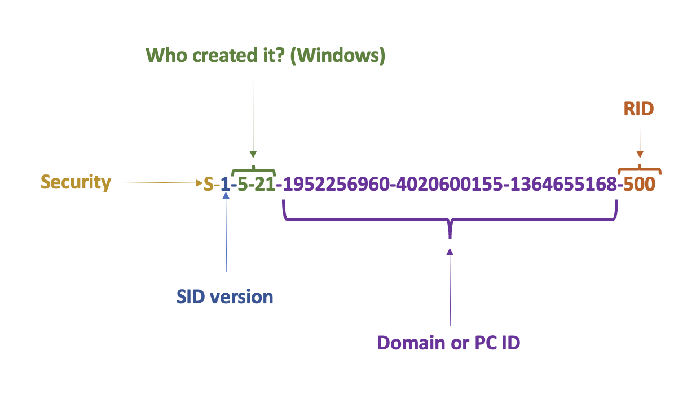
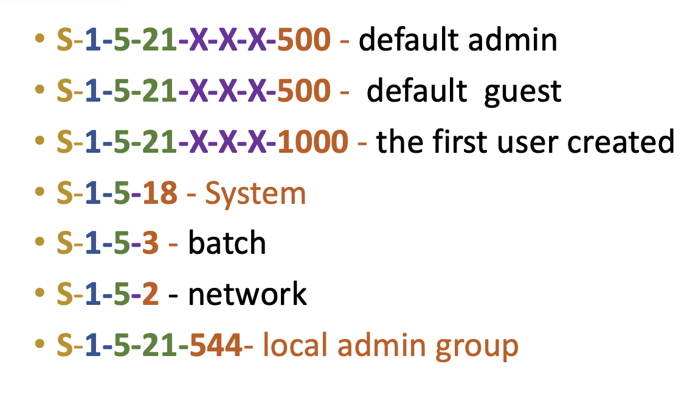
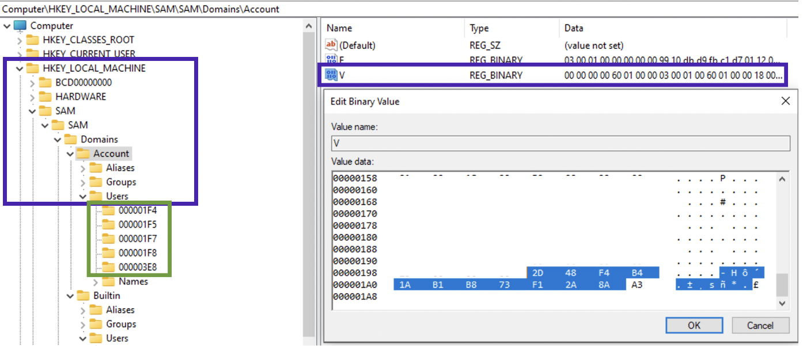
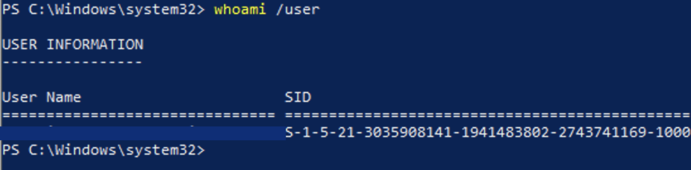

To carry out nearly any action on a system, one requires an account, which is typically safeguarded by passwords or other credentials. Hence, it is crucial to understand why attackers exhibit such a strong interest in acquiring them.
SID
Below is the structure of a SID. SID, shortly speaking, is a user id. The actual ID of the user is the RID (relative identifier) part.

In case Who created it? aka issuing authority ends with number 21, a trailing SID will represent PC or domain identifier (purple in the picture above). 1 - revision number, 5 - issuing authority, 21 - sub-issuing authority.
Here the most common SIDs you will see in the wild:

❗️Built-in accounts don’t have a Unique domain identifier and RID.
To get a user’s SID:
wmic useraccount where name='veronicazvereva' get sid # or
whoami /user # for current user
PC/domain ID can be viewed in SAM\SAM\Domains\Accounts, value V, last 12 bytes of the data chunk:

In order to translate this value, split the hex 12 byte value into three 4 byte chunks. Since these are little-endian, reverse the order of the bytes, convert each to decimal If this is a negative value, something is not right. It’s a 32-bit unsigned value! For example, in the below picture we see that the machine id is 2d 48 f4 b4 1a b1 b8 73 f1 2a 8a a3. Splitting into 3 chunks gives us: 2d 48 f4 b4, 1a b1 b8 73 and f1 2a 8a a3. Lets now convert each to little-endian: b4 f4 48 2d, 73, b8, b1, 1a and a3 8a 2a f1. Now, each set of 4 bytes in decimal: 3035908141, 1941483802, 2743741169. The resulting machine ID part of the SID is then: 3035908141-1941483802-2743741169. Let’s check in PowerShell:

In the picture above with the registry window, the green square 🟩 shows the RIDs in hex. Given the RID, one can deduce something about the user, since some users have predefined RIDs:
S-1-5-21-X-X-X-500- default adminS-1-5-21-X-X-X-501- default guestS-1-5-21-X-X-X-1000- the first user created on a Windows 7 and below,S-1-5-21-X-X-X-1001- for newer systemsS-1-5-18- SystemS-1-5-3- batchS-1-5-2- networkS-1-5-21-544- local admin group
The previous picture shows that the RID is 1000, meaning it’s the first user account (surprisingly not 1001 since it’s a Windows 10 machine).
Accounts
- SYSTEM 👑
- Network service (very close to a user account)
- Local service (like the previous one but not “chatting” over the network allowed)
- DWM and UMFD (no docs, some built-in service account)
- Anonymous (no creds, limited privileges). Usually used by some shared resources like a printer.
Built-in Admin (RID 500)
Local Admin (RID NOT 500)
❗️This is not the same as the built-in admin account on every Windows system with RID
500.
❗️The use of a local admin account with a single password that grants remote access to all machines within an enterprise is considered a well-known vulnerability.
Local User Accounts
For each user there will be a separate sub-key under SAM\SAM\Domains\Account\Users. The sub-keys names are actually RID of the user in hex. Each sub-key will have several values. Record V contains static information (username, password length etc), while record F contains constantly updated information like timestamps 🕰:
- Last login is a little endian 8 byte value at
0x08-0x0foffset. - Last password change time at offset
0x18-0x1f, 8 bytes long. - Last failed logon time is at offset
0x28-0x2f, 8 bytes.
RID itself is stored in F record at offset 0x30-0x33 (little endian). Also, there is PasswordRequired (at 0x38). There several possible values for this nibble (half byte): 0 - account active + pass required, 1 - account is not active, 4 - any policies do not apply to this account.
🧪 I have
5on my machine, what does it mean?
Logon count is at 0x42-0x43 (two bytes).
The V value is more interesting. It contains usernames and hashes (NTLM). The user account name is at 0x1C0 offset (Unicode). What about the juicy stuff? I mean the password hashes. SAM file contains a 56-byte NTLM hash of the password, which is encrypted with an AES algo, the key 🔑 is stored in a system file. You’ll need both SAM and the system file to decrypt the password. Password cracking methodology:
- Export SAM and SYSTEM hives from the forensic image/suspect machine.
- Unencrypt the hash stored in the SAM file (🛠
mimikatz). - Create a word list from the current case (may export from Autopsy, EnCase etc).
- Run a dictionary 📖 or brute-force attack 💪 against this NTLM hash (🛠:
hashcat🐈⬛ ,John the Ripper🔪, Cain and Able 🔪 🐏).
# decrypt the hashes:
mimikatz
> lsadump::sam /system:"path_to_SYSTEM" /SAM:"path_to_SAM"
# crach the hash with hashcat
Other values are stored in this sub-key. ForcePasswordReset speaks for itself, and SupplementalCredentials do not. There also can be a UserPasswordHint, which sometimes contains the actual password.
Microsoft Accounts
Since Win8. Can be logged in if there is internet access. Profiles and settings are stored in the cloud ☁️. Additional values are stored in SAM: InternetUID and InternetUserName. Both are unique to the user. InternetUID is a 16 byte Unicode string. InternetUserName - usually an email used as a login.
❗️As an account domain field, Microsoft uses both email and username (the first part of it) interchangeably.
🏺 LiveSSD
It is derived from the Windows Live cloud accounts.
Domain Accounts
Key 🔑 : Software\Microsoft\Windows NT\CurrentVersion\ProfileList.
The key above will have a ProfileImagePath.
⚠️ SAM doesn’t have any information about domain accounts! See more info in software section, domain accounts.
❗️Domain admin is part of the local admin group. It can be removed from this group by the local admin. ❗️
SeDelegateSessionUserImpersonatePrivilegemarks a domain admin.
Deleted Accounts
🛠 Registry Explorer (Eric Zimmerman’s tool) shows deleted accounts. If the data was not overwritten, we will be able to get the information.
C:\Windows\System32\Config
Default Accounts
Default local user account:
- Administrator
- Guest
- HelpAssistant
- DefaultAccount
Default system accounts (not visible for the user):
- SYSTEM
- NETWORK SERVICE
- LOCAL SEVICE
There are two main places within the registry that contains that information: SAM hive for local and Microsoft accounts and Software\Microsoft\Windows NT\CurrentVersion\ProfileList for Domain Accounts.
❗️❗️❗️❗️ More details see here.
To crack Windows NTLM hashes (for local accounts only), you’ll need both SYSTEM and SAM hives. SYSTEM contains an AES key 🔑 for NTLM decryption and SAM contains the encrypted hash. After the hash is decrypted, either brute-force 💪 or dictionary 📖 attack needs.
Xbox on later versions is a built-in game center. It also contains some information about the user (if he uses it for fames): C:\Users\%Username%\AppData\Local\LocalState\ModelManager\Xboxlivegamer.xml (user profile).
Also, collect DPAPI master user and system keys: https://www.youtube.com/watch?v=vA4qa0uWRHU.
\Users\%username%\
\Users\%username%\Desktop
\Users\%username%\Documents
\Users\%username%\Downloads